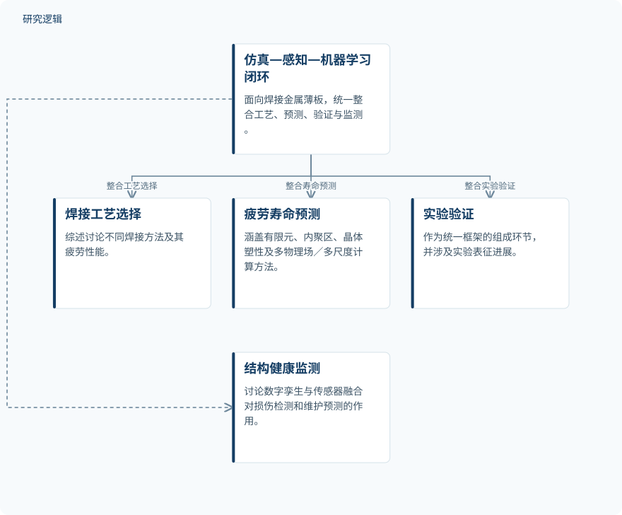

摘要解读
融合仿真、传感与机器学习的焊接金属薄板结构智能疲劳管理
Toward Intelligent Fatigue Management of Welded Metal Sheet Structures by Integrating Simulation, Sensing, and Machine Learning
解读更新 2026-10-17 15:23 · 依据公开摘要整理，未核验全文细节
焊接金属薄板兼具高强度与轻量化优势，但焊缝几何与制造缺陷的相互作用，让疲劳寿命预测持续面临挑战。这篇综述的阅读价值，在于将工艺选择、计算预测、实验验证与健康监测放进同一框架，讨论疲劳管理如何连接仿真、感知与机器学习。
文章目录
薄板轻量化背后，疲劳裂纹仍是隐忧
焊接金属薄板广泛用于汽车、航空航天、船舶与土木基础设施，其长期结构稳定性却受到疲劳失效的威胁。摘要强调，疲劳裂纹扩展受到焊缝几何和制造相关缺陷相互作用的显著影响。因此，理解疲劳问题需要同时关注焊接过程及其形成的结构特征，而不只是单独看寿命预测工具。
从焊接工艺到监测技术，综述如何组织证据
这是一篇综述，而非摘要中报告了新试验结果的研究论文。其梳理范围包括焊接工艺、疲劳机制、计算工具与预测方法进展，并讨论激光束焊、电阻点焊、钨极惰性气体保护焊及激光—电弧复合焊的疲劳性能。
在计算方法上，摘要列出有限元建模、内聚区建模、晶体塑性建模及多物理场／多尺度仿真；在观测与管理层面，则涉及实验表征、结构健康监测、机器学习赋能的数字孪生与传感器融合。摘要未交代文献检索、筛选及证据评价的具体方法。
依据摘要整理的疲劳管理闭环组成


示意综述明确整合的研究环节，不表示具体执行顺序、已部署系统或已验证效果；此图不是论文原图。
下载 SVG图示关系说明
实线表示相邻阶段的信息流，虚线表示跨阶段联系或反馈。
仿真—感知—机器学习闭环 → 焊接工艺选择：整合工艺选择；仿真—感知—机器学习闭环 → 疲劳寿命预测：整合寿命预测；仿真—感知—机器学习闭环 → 实验验证：整合实验验证；仿真—感知—机器学习闭环 → 结构健康监测：整合健康监测
核心归纳：让预测、验证与监测进入同一闭环
摘要强调的主要贡献是框架层面的整合：面向焊接薄板，将焊接工艺选择、疲劳寿命预测、实验验证和结构健康监测纳入统一的仿真—感知—机器学习闭环，而非将传统方法与数据驱动方法分开讨论。
作者还指出，机器学习赋能的数字孪生和传感器融合框架有助于改善疲劳损伤检测与维护预测。不过，摘要没有给出量化提升、具体比较结果或适用条件，不能据此认定某种算法或焊接工艺表现最优。
环境与微观组织变化仍难预测，验证边界尚不明确
摘要明确指出，环境退化与微观组织演化的准确预测仍具挑战，物理模型与数据驱动模型的融合仍需进一步研究。仅凭摘要，也无法判断所综述研究的样本规模、材料与接头覆盖范围、载荷及环境条件、比较基线，以及数字孪生和维护预测的验证范围；这些是当前资料无法判断的信息，不代表论文未做相关讨论。
阅读启发：关注闭环如何连接，而不只关注算法名称
阅读启发：后续阅读可重点追问，工艺与缺陷信息如何进入寿命模型，监测信息又如何参与模型更新和维护判断。对于智能运维与疲劳可靠性研究，更值得核对的是这些环节之间的证据联系，以及环境退化和微观组织变化是否被纳入验证，而不是仅凭“数字孪生”或“机器学习”的名称推断工程成熟度。
以上为本站阅读启发与建议，不是论文已验证的结论。